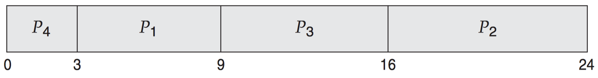
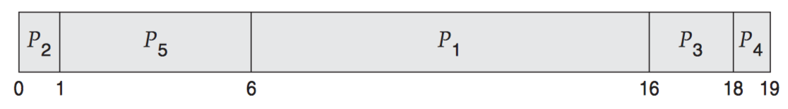

Chapter 6 CPU Scheduling¶
6.1 Basic Concepts¶
The objective of multiprogramming is to have some process running at all times, to maximize CPU utilization.
A process is executed until it must wait, typically for the completion of some I/O request.
6.1.1 CPU–I/O Burst Cycle¶
Process execution = cycle of CPU + I/O wait.

6.1.2 CPU Scheduler¶
Short-term scheduler (CPU scheduler): select process in the ready queue.
6.1.3 Preemptive Scheduling¶
CPU-scheduling decisions when a process:
- (nonpreemptive) Switches from the running state $\to$ the waiting state (e.g. I/O request,
wait()for child) - (preemptive) Switches from the running state $\to$ the ready state (e.g. interrupt)
- (preemptive) Switches from the waiting state $\to$ the ready state (e.g. completion of I/O)
- (nonpreemptive) Terminates
6.1.4 Dispatcher¶
Dispatcher
The module that gives control of the CPU to the process selected by the short-term scheduler. It should be fast.
- Switching context
- Switching to user mode
- Jumping to the proper location in the user program to restart that program
Dispatch latency
The time it takes for the dispatcher to stop one process and start another running.
Stop a process $\leftrightarrow$ Start a process
6.2 Scheduling Criteria¶
- CPU utilization
- Throughput
- Turnaround time: $\text{Completion Time} - \text{Start Time}$.
- Waiting time: The sum of the periods spent waiting in the ready queue.
- Response time
6.3 Scheduling Algorithms¶
6.3-1 First-Come, First-Served Scheduling¶
- The process which requests the CPU first is allocated the CPU.
-
Properties:
- Nonpreemptive FCFS.
- CPU might be hold for an extended period.
-
Critical problem: Convoy effect!
-
Example:
-
Given processes:
Process Busrt Time $P_1$ 24 $P_2$ 3 $P_3$ 3 -
Consider order: $P_1 \to P_2 \to P_3$:
-
Gantt chart:

-
Average waiting time = (0 + 24 + 27) / 3 = 17 ms.
-
-
Consider order: $P_2 \to P_3 \to P_1$:
-
Gantt chart:

-
Average waiting time = (0 + 3 + 6) / 3 = 9 ms.
-
-
Convoy effect
All the other processes wait for the one big process to get off the CPU.
6.3.2 Shortest-Job-First Scheduling¶
-
Properties:
- Nonpreemptive SJF
- Shortest-next-CPU-burst first
-
Problem: Measure the future!
-
Example 1:
-
Given processes:
Process Burst Time $P_1$ 6 $P_2$ 8 $P_3$ 7 $P_4$ 3 -
By SJF scheduling:
-
Gantt chart:

-
Average waiting time = (3 + 16 + 9 + 0) / 4 = 7 ms.
-
-
SJF is used frequently in long-term (job) scheduling, but it cannot be implemented at the level of short-term CPU scheduling.
Exponential average
Let $t_n$ be time of $n$th CPU burst, and $\tau_{n + 1}$ be the next CPU burst.
\begin{align} \tau_{n + 1} & = \alpha t_n + (1 - \alpha)\tau_n, \quad 0 \le \alpha \le 1. \\ & = \alpha t_n + (1 - \alpha)\alpha t_{n - 1} + \cdots + (1 - \alpha)^j \alpha t_{n - j} + \cdots + (1 - \alpha)^{n + 1}\tau_0. \end{align}
-
Example 2:
-
Given processes:
Process Arrival Time Burst Time $P_1$ 0 8 $P_2$ 1 4 $P_3$ 2 9 $P_4$ 3 5
By preemptive SJF scheduling:
-
Gantt chart:

-
Average waiting time = [(10 - 1) + (1 - 1) + (17 - 2) + (5 - 3)] / 4 = 26 / 4 = 6.5 ms.
-
6.3.3 Priority Scheduling¶
-
Properties:
- CPU is assigned to the process with the highest priority — A framework for various scheduling algorithms:
- FCFS: Equal-priority with tie-breaking
- SJF: Priority = 1 / next CPU burst length
- CPU is assigned to the process with the highest priority — A framework for various scheduling algorithms:
-
Example:
-
Given processes:
Process Burst Time Priority $P_1$ 10 3 $P_2$ 1 1 $P_3$ 2 4 $P_4$ 1 5 $P_5$ 5 2 -
By preemptive SJF scheduling:
-
Gantt chart:

-
Average waiting time = (6 + 0 + 16 + 18 + 1) / 5 = 8.2 ms.
-
-
Problem with priority scheduling
- indefinite blocking: low-priority processes could starve to death!
- starvation
Aging
Aging gradually increase the priority of processes that wait in the system for a long time.
6.3.4 Round-Robin Scheduling¶
- RR is similar to FCFS except that preemption is added to switch between processes.
-
Goal: fairness, time sharing.
-
Example:
-
Given processes with quantum = 4ms:
Process Burst Time $P_1$ 24 $P_2$ 3 $P_3$ 3 -
Gantt chart:

-
Average waiting time = [(10 - 4) + 4 + 7] / 3 = 5.66 ms.
-
Although the time quantum should be large compared with the context switch time, it should not be too large.
6.3.5 Multilevel Queue Scheduling¶
-
Intra-queue scheduling
- Independent choice of scheduling algorithms
-
Inter-queue scheduling
- Fixed-priority preemptive scheduling
- e.g., foreground queues always have absolute priority over the background queues.
- Time slice between queues
- e.g., 80% CPU is given to foreground processes, and 20% CPU is given to background processes.
- Fixed-priority preemptive scheduling
Each queue has absolute priority over lower-priority queues.
If an interactive editing process entered the ready queue while a batch process was running, the batch process would be preempted.

6.3.6 Multilevel Feedback Queue Scheduling¶
Multilevel feedback queue allows a process to move between queues.
A multilevel feedback queue is defined by:
- #queues
- The scheduling algorithm for each queue
-
The method used to determine when to
- upgrade a process to a higher priority queue
- demote a process to a lower priority queue
-
The method used to determine which queue a process will enter when that process needs service
6.4 Thread Scheduling¶
6.4.1 Contention Scope¶
Process Contention Scope (PCS)
On systems implementing the many-to-one and many-to-many models, the thread library schedules user-level threads to run on an available LWP, since competition for the CPU takes place among threads belonging to the same process.
It is important to note that PCS will typically preempt the thread currently running in favor of a higher-priority thread
System Contention Scope (SCS)
Competition for the CPU with SCS scheduling takes place among all threads in the system. Systems using the one-to-one model.
6.4.2 Pthread Scheduling¶
- PCS:
PTHREAD_SCOPE_PROCESS - SCS:
PTHREAD_SCOPE_SYSTEM
2 methods:
pthread_attr_setscope(pthread attr_t *attr, int scope)pthread_attr_getscope(pthread attr_t *attr, int *scope)
6.5 Multiple-Processor Scheduling¶
6.5.1 Approaches to Multiple-Processor Scheduling¶
- Asymmetric multiprocessing: only the master server process accesses the system data structures, reducing the need for data sharing.
- Symmetric multiprocessing (SMP): each processor is self-scheduling.
6.5.2 Processor Affinity¶
Processor Affinity
A process has an affinity for the processor on which it is currently running.
- Soft affinity
- Hard affinity (e.g. Linux:
sched_setaffinity())
Non-Uniform Memory Access (NUMA)
A CPU has faster access to some parts of main memory than to other parts.

6.5.3 Load Balancing¶
On systems with a common run queue, load balancing is often unnecessary, because once a processor becomes idle, it immediately extracts a runnable process from the common run queue.
- Push migration: pushing processes from overloaded to less-busy processors.
- Pull migration: pulling a waiting task from a busy processor.
6.5.4 Multicore Processors¶
SMP systems that use multicore processors are faster and consume less power than systems in which each processor has its own physical chip.
There are two ways to multithread a processing core:
- Coarse-grained: a thread executes on a processor until a long-latency event such as a memory stall occurs.
- Fine-grained (interleaved): switches between threads at a much finer level of granularity
6.6 Real-Time CPU Scheduling¶
- Soft real-time systems
- Hard real-time systems
6.6.1 Minimizing Latency¶
Event latency
The amount of time that elapses from when an event occurs to when it is serviced.
There are 2 types:
- Interrupt latency
- Dispatch latency
Interrupt latency
The period of time from the arrival of an interrupt at the CPU to the start of the interrupt service routine (ISR) that services the interrupt.
Dispatch latency
The amount of time required for the scheduling dispatcher to stop one process and start another.
6.6.2 Priority-Based Scheduling¶
The processes are considered periodic. That is, they require the CPU at constant intervals (periods). ($t$: fixed processing time, $d$: deadline, and $p$: period.)
$$0 \le t \le d \le p.$$
$$rate = 1 / p.$$
Admission-control:
- Admits the process.
- Rejects the request.
6.6.3 Rate-Monotonic Scheduling¶
-
Example 1:
-
Given processes: (the deadline for each process requires that it complete its CPU burst by the start of its next period.)
Process Period ProcTime $P_1$ $p_1 = 50$ $t_1 = 20$ $P_2$ $p_2 = 100$ $t_2 = 35$ 
-
-
Example 2:
-
Given processes:
Process Period ProcTime $P_1$ $p_1 = 50$ $t_1 = 25$ $P_2$ $p_2 = 80$ $t_2 = 35$ 
-
6.6.4 Earliest-Deadline-First Scheduling¶

6.6.5 Proportional Share Scheduling¶
Proportional share schedulers operate by allocating $T$ shares among all applications. An application can receive $N$ shares of time.
6.6.6 POSIX Real-Time Scheduling¶
-
POSIX.1b — Extensions for real-time computing
SCHED_FIFOSCHED_RRSCHED_OTHER
-
API
pthread_attr_getsched_policy(pthread_attr_t *attr, int *policy)pthread_attr_setsched_policy(pthread_attr_t *attr, int *policy)
6.7 Operating-System Examples¶
6.7.1 Example: Linux Scheduling¶
6.7.2 Example: Windows Scheduling¶
6.7.3 Example: Solaris Scheduling¶
6.8 Algorithm Evaluation¶
6.8.1 Deterministic Modeling¶
Deterministic modeling
It is one type of analytic evaluation. This method takes a particular predetermined workload and defines the performance of each algorithm for that workload.
6.8.2 Queueing Models¶
- Little's formula ($n$: # of processes in the queue, $\lambda$: arrival rate, $W$: average waiting time in the queue.)
$$n = \lambda \times W.$$
6.8.3 Simulations¶
-
Properties:
- Accurate but expensive
-
Procedures:
- Program a model of the computer system
- Drive the simulation with various data sets